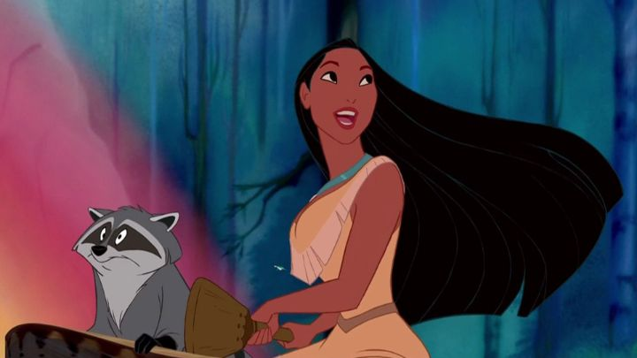

One thing I think most people agree on regarding Disney's "Pocahontas," is that they meant well.The problem is that the original myth of Pocahontas isn't true, and yet is based on a real person, such that the story hides their real history. It's interesting to read about, but basically, the Native-American Pocahontas was captured by English settlers, and was converted to Christianity, ultimately marrying one of the settlers at a young age (and not "John Smith," as the story would suggest). She was used as a figurehead for the Europeans bringing "civilization" to the new world, as an example that savages could indeed be tamed and trained to become one of them. Interestingly, the direct-to-home-video Disney sequel "Pocahontas II" just address some of these elements of the real person, while also reworking it into the fairy tale and making it family friendly, of course. As a kid, by the time I learned any history in school, it was already common knowledge that Europeans didn't "discover" the Americas, so much as stole it from the Natives that were there long before. The term "Indian" was discouraged. But even then, there were still remnants of how Indians were represented, typically in "Cowboy vs Indians" television, comics and games. Even decades later, in the 2020's, new information is still brought to attention about the extent of what settlers did to Natives, both after making their home, and for generations after in an attempt to further wash out their cultures. Even today, we can't bring up the topic in media and entertainment without those emotions, and there isn't any solution, beyond having hundreds of millions leave and "go back where they came from." With that context, "Pocahontas" was very forward-thinking and bold when it released in 1995. Even though it leans heavily into the myth and makes the woman yet another "Disney Princess," it brought attention to the issue in mainstream cinema, in a friendly but unflinching way for children. It's a shame that the female lead feels too far reduced into a girl yearning for love, and that the movie as a whole isn't particularly fun or memorable. The story opens with the perspective of English settlers about to set sail from Europe to Virginia. The Englishmen old and young aren't shy about their prospects, "to tame the land, build a home, and kill some savages." They're led by Governor Ratcliffe, a fat aristocrat eager to mine for gold and bring back yet more wealth to the King. And they have Captain John Smith with them, a handsome and seasoned adventurer, who's seen many lands and killed many savages in his voyages. Fade to the Powhatan tribe, and we see a new culture and civilization already present in the American wilderness, full of farms and crops, homes and families, and a respect for each other and the land they live on. Among them is Pocahontas, the chieftan's daughter, the most adventurous among them, and not eager to marry and settle down, despite her father's wishes. As a kid, the main theme was clear: "settlers are bad, and are stealing from good native people." As an adult, I catch more subtle things I missed, like how open the Englishmen are about their intent on killing any savage that gets in their way of taming the land. It's suggested that it's commom knowledge by this point that Europeans are unjustly taking the land for themselves, but that the opportunity for wealh is too good to ignore, and that Indians should be killed for not cooperating. That's a pretty bold statement. John Smith is a seemingly perfect hero and leader, brave and handsome and strong, a model adventurer, but also sees nothing wrong with the Indians he's killed along the way. He nearly shoots Pocahontas on their first meeting, only stopping when he sees her beauty through the waterfall mist. Basically, he's an idiot. And even after slowly learning and accepting Pocahontas' way of life, there's not a moment when he loses his dashing smile or laments the Natives he'd killed in the past. Had he not fallen in love at first sight, he'd probably have slaughtered the entire tribe without a second thought. And Pocahontas, curious about men unlike any she's seen before, seems infatuated, not immediately with love, but just around the mystery of something new. She's eager to learn about Smith, even while recognizing how little he knows about her way of life and teaching him a few things. But she was introduced to be independent, free from the expectations put on her, like prior recent Disney princesses. It's a shame for her to fall in love with the first new man she sees, and for her actions throughout the story to revolve around her love for Smith, with no other direction or urgency to guide her life. She's a symbolic princess, but is otherwise one of the weakest since Aurora in "Sleeping Beauty." The places where the movie works best is when it's directly discussing the coming conflict between the natives and the new Europeans. It becomes a war between factions, like "West Side Story," complete with a cross-over romance that interrupts the whole thing. But it's written and directed with great opportunity, with both sides calling the other "inhuman savages" at one point. The visual design and songs during that conflict are similar to "The Prince of Egypt," a movie Dreamworks would release years later, and fans of "Egypt" should consider revisiting "Pocahontas" to see it themselves. Otherwise, the story is a little dull, and unfortunately, not memorable. Governor Ratcliffe is greedy and heartless, but not as evil, and his fat cartoonish design isn't as marketable as past Disney villains. The only elements to cater to children is a comic relief animals: a hummingbird and constantly hungry racoon from the native side, and a pampered pug dog on the European side, each chasing each other over stolen food. It wasn't enough to keep a child's attention, and as an adult I wanted less of them. As a kid, I couldn't recall anything that happens in the movie, and there's little reason to rewatch it. At least the production values are good. While never as strong as the prior recent movies, the animators have gotten better at animating characters, and there are inspired ideas, like Grandmother Willow, a CGI/2D hybrid talking tree. There are great moments of beauty inspired by nature, especially during the one memorable song, "Colors of the Wind." Memorable or not, the songs and score are quite good. And the acting cast has some notable names, though thankfully they don't overshadow the movie. They include Mel Gibson as John Smith, and none other than Christian Bale and Billy Connolly as fellow Europeans (both names that became much more popular decades later). Notably, the main cast for the natives, including Irene Bedard as Pocahontas and Russell Means as her father, are in fact of native heritage themselves, a rare sign of authenticity that even modern filmmakers struggle to balance. Despite the talent, the performances never fully deliver, and there are moments of stumble: upon meeting, Pocahontas and Smith don't speak the same language, with her speaking a few words of her local tongue, only for magic to come in and allow them both to speak English, and for everyone else to understand each other without further acknowledgement. Nice try. My feelings of "Pocahontas" are less to do with whether the movie was accurate. I think it's respectful of the core theme and the people it represents, and for that, it's an important film that should be seen. I don't know if the topic would have been as culturally relevant had Disney not made the movie. But as a film, it's unusually dull and unmemorable for Disney, and a missed opportunity to make something truly grand for either kid or adult audiences.
- "Ani" More reviews can be found at : https://2danicritic.github.io/ Previous review: review_Planetes Next review: review_Pokemon_-_The_First_Movie